焼肉店
住宅地に近く、煙や臭いへの不安があった店舗
- 課題
- 近隣に新築住宅が増え、煙の臭いによる苦情が出る前に対策したかった。
- 導入
- 店内の排気系統を整理し、野田の消煙機を導入。
- 結果
- 近隣への煙・臭い対策を行い、安心して営業できる排煙環境を整えた。
電気集塵式 消煙機JL-8A
焼肉・焼き鳥・居酒屋の油煙を、電気の力で最大91%カット。設置工事から毎月のメンテナンスまで、飲食店の換気工事を20年以上手がけてきた野田がまとめて引き受けます。
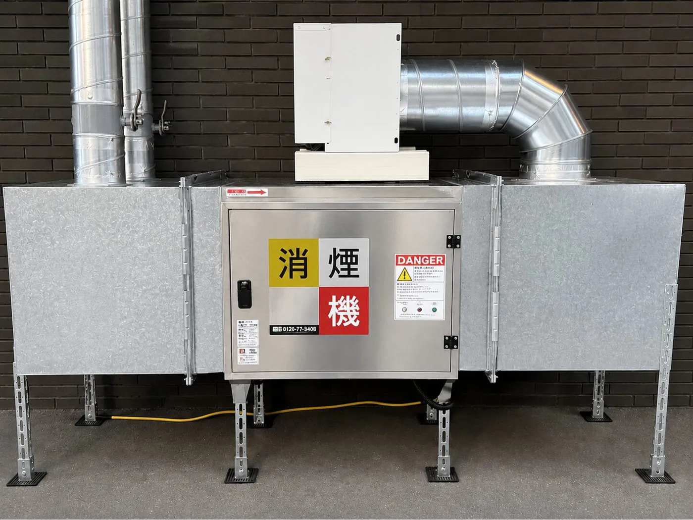
お悩み
焼肉・焼き鳥・居酒屋の煙は、近隣からの苦情だけでなく、建物の汚れや物件の契約にも関わってきます。
令和8年10月1日
〇〇焼肉 店主様
〇〇ビル 管理事務所
排気に関するお願い
近隣にお住まいの方から、店舗の排気口から出る煙と臭いについてご相談が寄せられています。「洗濯物に臭いが移る」「窓を開けられない」とのことです。
つきましては、排煙対策についてご検討いただきますよう、お願い申し上げます。
以上
「洗濯物に臭いがつく」「窓を開けられない」。住民とのトラブルに発展しやすい問題です。
油煙がそのまま排出されると、外壁の汚れや清掃費用の増加につながります。
煙・臭い対策が不十分だと、物件オーナーや管理会社の許可が取りにくくなります。
営業を続けるために、具体的な排煙対策を示す必要が出てきます。
仕組み
野田の消煙機は「電気集塵方式」です。ダクトを流れる煙に電気を帯びさせ、極板に吸い寄せて集めます。目に見えないほど細かい油煙まで集められ、風の通りを妨げにくいのが特長です。
プレフィルターネット
ダクトから入ってきた空気の流れを一定の速さに整えて、集塵部（セル）へ送ります。
高電圧部 12kV
煙に含まれる油の粒や浮遊物が、高電圧部を通るときにプラスの電気を帯びます。
低電圧部 6kV
電気を帯びた粒はプラス極板に反発し、マイナス極板に吸い寄せられて集められます。
セルユニット内部の様子をわかりやすく表したイメージです。集塵率は最大値（91%）を示しています。
集塵部（セル）は洗浄して繰り返し使える構造です。使い捨てフィルターのように買い足す必要はありません。洗浄は毎月の定期メンテナンスで野田が行います。
※長期間の使用で劣化した部品（電極・ガイシなど）は、交換が必要になる場合があります。
製品
店舗・厨房の排煙処理のためにつくられた、電気集塵式の消煙機です。1時間に3,000㎥の排煙を処理します。
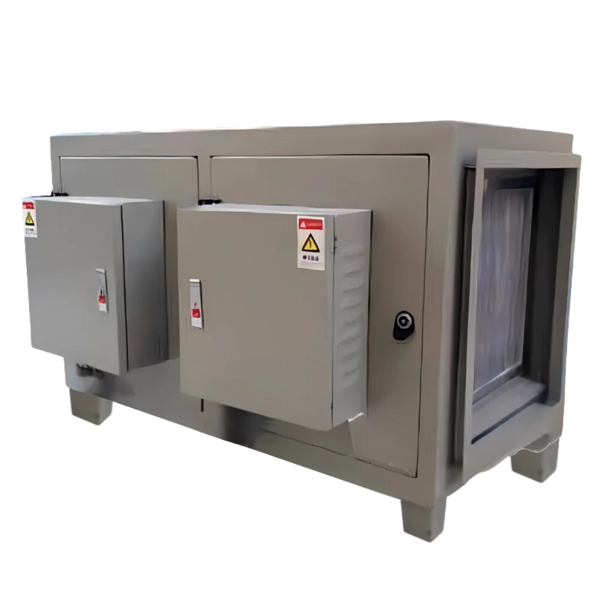
販売・施工・メンテナンス 株式会社野田
セルとフィルターを出し入れする「セルユニット扉」と、漏電ブレーカや電圧メーターのある「電気回路扉」を分けた構造です。
稼働中は緑色に点灯します。異常があると、緑と赤の点滅に切り替わってお知らせします。
通電中に扉を開けると安全装置が働き、自動で電源を遮断します。扉には鍵が付いています。
ダクトの接続に合わせて、吸込と排気の向きを現場で変更できます。たまった油は本体下部の排油口（ドレン）から出します。
本体の設置面積は750 × 840mm（約0.63㎡）。畳1枚（約910 × 1820mm）の半分に収まります。
※実際の設置には、ダクトと接続するチャンバーボックスと、正面0.7m以上のメンテナンススペースが別に必要です。
導入の効果
メンテナンス
電気集塵方式の性能を保つには、定期的な清掃が欠かせません。野田は推奨の間隔である1ヶ月ごとに訪問し、点検から洗浄、出力電圧の実測までを行います。お店での作業は必要ありません。
運転ランプや放電音を確認し、セル内部の異物・汚れ・傷みをチェックします。
セルとプレフィルターネットを取り外し、洗剤液に漬け込んで丁寧に洗浄・乾燥させます。
本体下部の油受けにたまった油を、排油口（ドレン）から排出します。
内蔵の電圧メーターで出力電圧を確認します。掃除だけで終わらせず、数値で性能を確かめてご報告します。
消煙機 定期点検記録
JL-8A
| 点検項目 | 結果 |
|---|---|
| 運転ランプ（緑点灯） | 良 |
| 放電音・異物 | 良 |
| セル・プレフィルター洗浄 | 済 |
| 排油（ドレン） | 済 |
| 出力電圧 高電圧側正常値 12kV ±2kV | 12.1 kV |
| 出力電圧 低電圧側正常値 6kV ±2kV | 6.0 kV |
壁やダクトの清掃が、
導入店舗の声
1ヶ月に1回から3ヶ月に1回に減りました。
導入事例
焼肉店・焼き鳥店・炉端焼き店など。近隣対策、外壁汚れの軽減、重飲食物件の排煙対策まで、店舗ごとの課題に合わせて導入されています。
の導入店舗が、クレームの減少を実感
の飲食店で導入
壁・ダクトの清掃が、月1回から3ヶ月に1回に
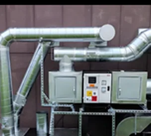
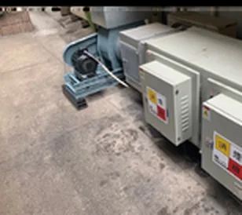
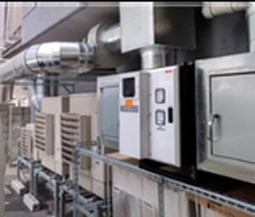
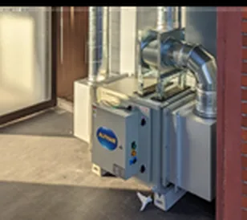
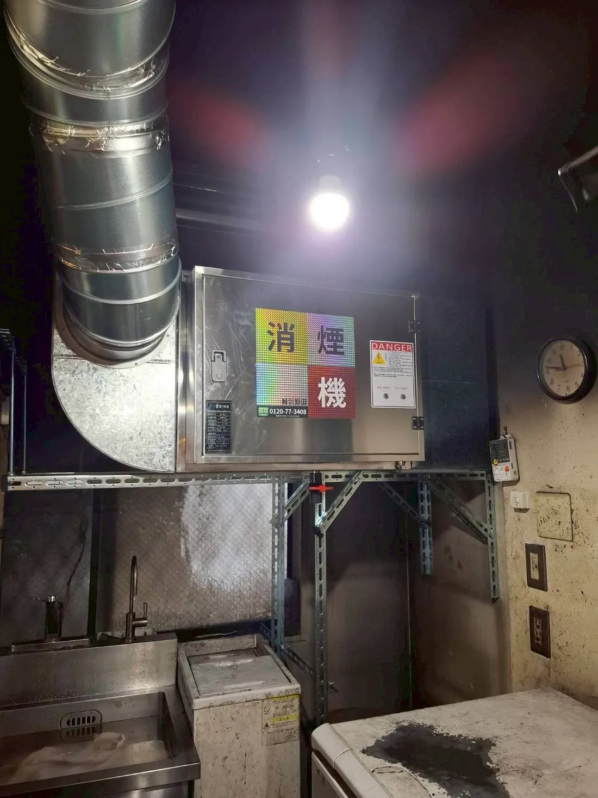
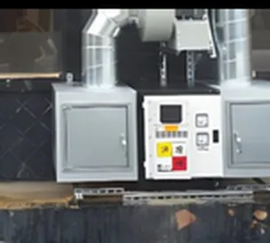
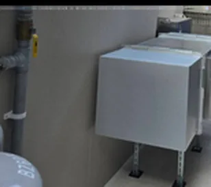
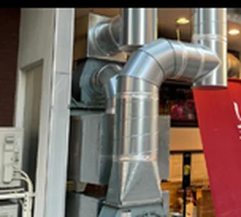
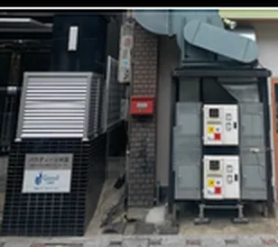
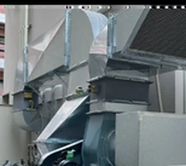
焼肉店
居酒屋
焼き鳥店
設置条件
厨房内・屋外・天井吊りなど、お店に合わせた配置を現地調査でご提案します。既存の店舗への後付けもできます。
月あたり 約1,510円
消費電力300W、電力単価31円/kWhで計算しています。ご契約内容や稼働状況によって変わります。
単相AC100V（50/60Hz）。アース（接地）の接続と漏電遮断器の設置が必要です。電気工事は電気工事士の資格を持つ者が行います。
正面（セルユニット扉側）に0.7m以上。天井吊りの場合は、扉のまわりと下側にも作業スペースを確保します。
消煙機とダクトはチャンバーボックスで接続し、風速を4〜6m/sに調整します。シロッコファンの吐き出し口には直接取り付けません。
本体は水平に設置します（重量100kg）。天井吊りは耐荷重金具を使って専門業者が施工します。屋外に置く場合は防雨カバー（別売）を取り付けます。
温度0〜50℃、湿度80%以下。ガソリンやシンナーなど燃えやすいものの近くには設置できません。
料金プラン
どちらのプランも、設置工事から毎月のメンテナンスまで野田が対応します。料金の詳細は、無料の資料でご確認ください。
消煙機本体を購入して導入するプランです。
初期費用を抑えて導入したい店舗におすすめのプランです。
導入の流れ
設置工事は通常1〜2日です。営業への影響をできるだけ抑えて導入できます。
お電話またはフォームからご連絡ください。お店の状況をうかがいます。
ご都合に合わせて専門スタッフが伺い、設置場所やダクトを確認します。
店舗の状況とご要望をもとにプランをご提案し、正式なお見積りをお出しします。
施工日を決めて着工します。進み具合はその都度ご報告します。
使い方をご説明します。その後は毎月訪問して、点検とメンテナンスを行います。
よくある質問
ここにないご質問は、お電話でお気軽にどうぞ。
フリーダイヤル0120-77-3408受付 9:00〜17:00（土・日・祝 定休）設置工事は基本的に1〜2日で完了します。店舗の設置場所によっては、日数をいただく場合もあります。
はい、できます。現在お使いの排気ダクトにチャンバーボックスを介して接続するため、大がかりな改修は必要ありません。営業への影響をできるだけ抑えて導入いただけます。
静電気の力で煙を集める「電気集塵方式」です。プレフィルターネットで整えられた煙は、高電圧部（12kV）でプラスの電気を帯び、続く低電圧部（6kV）でマイナス極板に吸い寄せられます。フィルターで濾し取るのではなく電気で吸い付けるため、細かな油煙まで集められ、風の通りを妨げにくいのが特長です。
通常の運転ではほとんど音がなく、店内の会話や営業の妨げにはなりません。初めて電源を入れたときなどに「パチパチ」という放電音が一時的に鳴ることがあります。この音が続く場合は内部に異物が入っているサインのため、点検・清掃で対応します。
本体に電圧メーターを内蔵しており、毎月のメンテナンスで集塵性能の要となる出力電圧（高電圧側12kV±2kV／低電圧側6kV±2kV）を確認しています。掃除だけで終わらせず、数値で性能を確かめたうえでご報告します。
集塵部（セル）は洗浄して繰り返し使える構造のため、使い捨てフィルターのように買い足す必要はありません。洗浄は毎月のメンテナンスで行います。なお、長期間の使用で劣化した部品（電極・ガイシなど）は交換が必要になる場合があります。
消費電力は300Wです。1日6〜7時間・月25日の営業でお使いの場合、電気代の目安は月1,500円程度です（電力単価31円/kWhで計算。ご契約内容や稼働時間により変わります）。
本体サイズは750(W)×840(D)×680(H)mmで、畳1枚に収まる大きさです。設置にあたっては、本体の前後に接続用のチャンバーボックスを、正面（セルユニット扉側）に0.7m以上のメンテナンススペースを確保します。厨房内・屋外・天井吊りなどから、現地調査で最適な配置をご提案します。
問題ありません。毎月のメンテナンスで扉を開けて内部の部品を引き出すため、本体の正面に一定のスペースが必要です。現地調査で確認します。店内への設置事例もあります。
はい。屋外に設置する場合は防雨カバー（別売）を取り付け、油漏れ・虫や雨水の侵入・使用環境（温度0〜50℃、湿度80%以下）を考えて施工します。
購入プランとレンタルプランの2種類をご用意しています。料金の詳細は資料をご覧ください。
お買い上げ日から1年間の保証があります。保証期間内に正常な使い方で故障した場合は、無償で修理します（天災、誤った使い方、消耗品の劣化などによる故障は、保証規定により有償となります）。
資料請求
設置イメージ・料金プラン・メンテナンス内容をまとめた資料です。送信後すぐに、ダウンロード用のメールが自動で届きます。